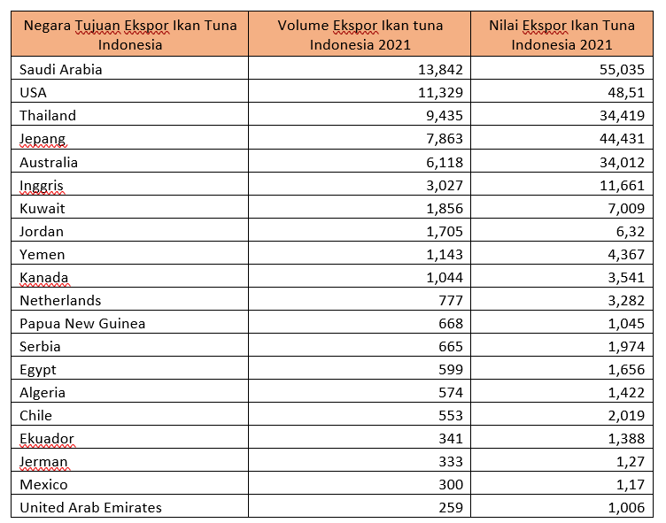

library(tidyverse)
library(readxl)Analisis Pengaruh Volume Ekspor Ikan Tuna Indonesia Terhadap Nilai Ekspor Ikan Tuna Indonesia Pada Tahun 2021
Metode Penelitian Politeknik APP Jakarta
This just a showcase of what quarto docs can produce. I use this part for my students.

1 Pendahuluan
1.1 Latar Belakang
Pada akhir abad 20, telah terjadi perkembangan yang menguntungkan bagi negara-negara yang ada di dunia yang mengubah sistem hubungan antar negara, yaitu dengan munculnya proses globalisasi dan perdagangan bebas. Dengan meningkatnya teknologi, seperti transportasi, teknologi informasi, dan komunikasi membuat seluruh kegiatan perdagangan internasional dan kegiatan ekonomi menjadi sangat penting. Saat ini para negara sedang berlomba-lomba untuk membentuk kegiatan ekspor dan impor melalui kebijakan ekonomi. Dengan adanya perdagangan internasional, diharapkan mampu membantu meningkatkan pertumbungan ekonomi suatu negara yaitu berupa, trasaksi modal, pendapatan negara, perluasan pekerjaan, dan cadangan devisa.
Indonesia menjadi salah satu negara dengan mengeskpor ikan tuna terbesar di dunia. Hal tersebut dikarenakan, hampir 70% wilayah Indonesia adalah perairan dengan luas laut sekitar 5.8 juta km2 dengan garis pantai sepanjang 81.00 km yang merupakan garis pantai produktif terpanjang di dunia. Posisi Indonesia yang strategis menjadikan laut Indonesia terhubung dengan arus-arus laut dunia dan berada di antara Samudra Hindia dan Pasifik. Sehingga, menyebabkan Indonesia memiliki sekitar 8.500 spesies ikan, 555 spesies rumput laut, dan 950 biota terumbu karang. Dengan laut yang sangat luas dan kekayaan laut yang dimiliki memberikan keuntungan bagi Indonesia untuk melakukan ekspor hasil kekayaan laut, khususnya pada sektor perikanan. Terdapat perencanaan pembangunan kelautan dan perikanan yang didasarkan konsepsi pembangunan yang berkelanjutan, dimana didukung oleh pengembangan industri berbasis sumber daya alam dan sumber daya manusia guna mencapai daya saing yang tinggi. Membangun sub sektor perikanan yang mempunyai keunggulan kompetitif berdasarkan keunggulan komperatif merupakan salah satu arah pembangunan pada sub sector perikanan kedepannya.
Ikan tuna menjadi salah satu komoditas unggulan Indonesia dalam sektor perikanan yang meningkatkan ekonomi dan pembangunan perikanan. Sebab itu, potensi perikanan tuna di Indonesia harus diatur dan terus dijaga. Tingginya permintaan ikan tuna di pasar global dan volume ikan tuna yang hanya berselisih dengan jumlah stok ikan lestari menyebabkan pemerintah Indonesia untuk membuat regulasi tentang tata kelola tuna utnuk kesejahteraan nasional. Diharapkan dalam mengatur tata Kelola di Indonesia, bukan hanya pada regulasi melainkan juga pada kemandirian, ketahanan, dan kedaulatan pangan nasional. Pemerintah berharap Indonesia mampu memanfaatkan sumber daya ikan tuna mulai dari penangkapan pengelolahan hingga pemasarannya sesuai dengan ketentuan yang telah disepakati.
Ikan tuna menjadi komoditas ekspor yang menduduki peringkat ketiga dalam nilai ekspor Indonesia. Pada tahun 2022, komoditas tuna menyumbang nilai ekspor sebesar US$865,73 juta dari total nilai ekspor perikanan Indonesia. Tangkapan tuna di Indonesia menjadi salah satu tangkapan paling besar diantara negara lainnya, yaitu sebesar 16 persen potensi produksi ikan tuna dunia. Hasil tangkapan ikan tuna diekspor ke beberapa negara seperti Jepang, Thailand, Korea Selatan, Uni Eropa, Amerika Serikat dalam bentuk beku, olahan, bahkan segar. Meskipun terbilang memiliki hasil tangkapan yang berpotensi karena dalam jumlah besar, pada 2021 Indonesia hanya bisa memproduksi ikan tuna sebanyak 358.626,16 ton. Hal ini dikarenakan kurangnya sistem pengolahan ikan hingga belum mendapat sertikasi Hazard Analytical Critical Control Point (HACCP) supaya bisa mengeskpor ikan di Kawasan Asia. Berdasarkan penjelasan diatas, penelitian ini bermaksud untuk mengetahui apakah volume ekspor ikan tuna Indonesia berpengaruh terhadap nilai ekspor ikan tuna Indonesia pada tahun 2021 di pasar Indonesia.
1.2 Ruang Lingkup
Dengan adanya batasan masalah, maka tujuan penelitian ini diharapkan menghindari adanya penyimpangan maupun pelebaran pokok masalah agar penelitian ini lebih terarah dan memudahkan dalam pembahasan dengan tujuan penelitian ini akan tercapai. Penelitian ini akan membahas bagaimana pengaruh volume ekspor ikan tuna Indonesia terhadap nilai ekspor ikan tuna Indonesia pada tahun 2021 di pasar internasional.
1.3 Rumusan Masalah
Berdasarkan latar belakang yang telah dijelaskan diatas maka dapat diambil rumusan masalah dalam penelitian ini adalah bagaimana pengaruh volume ekspor ikan tuna Indonesia terhadap nilai ekspor ikan tuna Indonesia pada tahun 2021 di pasar internasional.
1.4 Tujuan dan Manfaat Penelitian
Berdasarkan pada latar belakang dan perumusan masalah diatas, adapun tujuan dan manfaat yang ingin dicapai dalam penelitian ini diantaranya :
Untuk mengetahui apakah volume ekspor ikan tuna berpengaruh terhadap nilai ekspor ikan tuna Indonesia di tahun 2021
Diharapkan dari penelitian ini dapat memberikan informasi kepada masyarakat mengenai pengaruh volume ekspor ikan tuna Indonesia terhadap total nilai ekspor ikan tuna Indonesia pada tahun 2021 di pasar internasional.
1.5 Package
Ini tidak wajib ada di packages yang digunakan antara lain sebagai berikut:
2 Studi Pustaka
2.1 Teori
Perdagangan Internasional
Menurut Christiano (2013) perdagangan international adalah kegiatan jual beli antara dua negara atau lebih. Kegiatan perdagangan internasional menjadi salah satu aspek yang penting bagi suatu negara, karena perdagangan internasional tidak hanya membantu dalam pembangunan melainkan membantu dalam mencari pasar di negara lain guna mendukung perkembangan industry dalam negeri. Terdapat dasar dalam perdagangan internasional adalah adanya perdagangan jasa atau barang antara dua negara atau lebih dimana bertujuan untuk mendapatkan keuntungan. Perdagangan Internasional akan terjadi jika ada permintaan dan penawaran pada pasar internasional.
Ekspor dan Impor
Menurut Marolop Tanjung (2011:63) kegiatan ekspor adalah kegiatan yang mengeluarkan suatu komoditi dari daerah pabean. Daerah pabean sendiri ialah wilayah Republik Indonesia yang meliputi wilayah darat, perairan dan ruang uadara diatasnya, serta tempat-tempat tertentu di Zona Ekonomi Ekslusif dan Landas Kontinen. Sedangkan menurut Marolop Tanjung (2011:63) impor adalah kegiatan yang memasukan komoditi ke dalam daerah pabean sesuai dengan ketentuan peraturan dan perundang-undagangan yang berlaku.
2.2 Kerangka Penelitian
3 Metode Penelitian
3.1 Data
Sumber data adalah salah satu faktor yang penting untuk sebuah penelitian, hal itu karena sumber data akan menyangkut kualitas dari hasil penelitian itu sendiri. Dalam penelitian ini peneliti menggunakan sumber data sekunder. Data sekunder sendiri bisa dapat berbagai bentuk dan data yang sudah dikumpulkan dari data yang sudah ada sebelumnya. Dalam penelitian ini data sekunder didapat dari situs Trademap atau pusat data statistic dunia yang dikembangkan oleh International Trade Centre UNCTAD/WTO, jurnal referensi, buku, artikel ilmiah serta website kementrian yang bersangkutan. Berikut adalah data yang digunakan, berupa volume ekspor ikan tuna Indonesia dan nilai ekspor Indonesia pada tahun 2021.
Dari data diatas, maka mengasilkan plot seperti dibawah ini:
setwd('D:/metopel/file') # AWAS SETWD-NYA PERBAIKI DULU
library('readxl')
library('tidyverse')
dat<-read_excel('uas.xlsx')
reg1<-lm(v~n,data=dat)
summary(reg1)
Call:
lm(formula = v ~ n, data = dat)
Residuals:
Min 1Q Median 3Q Max
-340.90 -145.80 -24.39 201.61 432.78
Coefficients:
Estimate Std. Error t value Pr(>|t|)
(Intercept) 373.082 67.384 5.537 2.95e-05 ***
n -8.795 3.016 -2.916 0.00922 **
---
Signif. codes: 0 '***' 0.001 '**' 0.01 '*' 0.05 '.' 0.1 ' ' 1
Residual standard error: 242.4 on 18 degrees of freedom
Multiple R-squared: 0.3209, Adjusted R-squared: 0.2831
F-statistic: 8.504 on 1 and 18 DF, p-value: 0.009218plot(dat$v,dat$n,xlab="nilai ekspor",ylab="volume ekspor")
Keterangan :
V: Volume Ekspor Ikan tuna Indonesia 2021
N: Nilai Ekspor Ikan Tuna Indonesia 2021
3.2 Metode Analisis
Metode yang digunakan adalah regresi univariat atau Ordinary Least Squere (OLS) dengan 2 variabel independent. Penelitian ini bermaksud untuk mencari pengaruh antara volume ekspor ikan tuna Indonesia dengan nilai ekspor ikan tuna Indonesia pada tahun 2021. Spesifikasi yang digunakan adalah:
\[ y_{t}=\beta_0 + \beta_1 x_t+\mu_t \] di mana \(y_t\) adalah volume dan \(x_t\) adalah nilai.
4 Pembahasan
4.1 Pembahasan Masalah
Pembahasan yang disajikan hanya menggunakan data negara tujuan untuk volume dan nilai ekspor ikan tuna Indonesia pada tahun 2021. Data dibawah diambil dari data Trademap.

4.2 Analisis Masalah
Suatu negara dapat dikatakan sukses apabila dapat menghasilkan volume dan nilai ekspor yang tinggi, dikarenakan jika kedua faktor tersebut menyentuh angka yang tinggi tentu saja akan menguntungkan bagi suatu negara.
Oleh karena itulah, penelitian ini dilakukan untuk menghubungkan pengaruh volume ekspor terhadap nilai ekspor Indonesia khususnya pada komoditi ikan tuna pada periode 2021. Berikut adalah data yang akan digunakan untuk melakukan regresi:
Hasil regresinya adalah
reg1<-lm(v~n,data=dat)
summary(reg1)
Call:
lm(formula = v ~ n, data = dat)
Residuals:
Min 1Q Median 3Q Max
-340.90 -145.80 -24.39 201.61 432.78
Coefficients:
Estimate Std. Error t value Pr(>|t|)
(Intercept) 373.082 67.384 5.537 2.95e-05 ***
n -8.795 3.016 -2.916 0.00922 **
---
Signif. codes: 0 '***' 0.001 '**' 0.01 '*' 0.05 '.' 0.1 ' ' 1
Residual standard error: 242.4 on 18 degrees of freedom
Multiple R-squared: 0.3209, Adjusted R-squared: 0.2831
F-statistic: 8.504 on 1 and 18 DF, p-value: 0.009218Diatas adalah hasil dari regresi data yang telah disajikan sebelumnya pada pembahasan masalah.
5 Kesimpulan dan Saran
5.1 Kesimpulan
Berdasarkan hasil regresi diatas, menunjukan bahwa volume ekspor ikan tuna tidak berpengaruh ke nilai ekspor ikan tuna. Hal itu dikarenakan setiap 1% volume ekspor ikan tuna Indonesia mempengaruhi -8,79% nilai ekspor ikan tuna Indonesia. Dimana keadaan itu bisa dikatakan volume ekspor ikan tuna pada tahun 2021 mengalami penurunan karena menunjukan nilai (-).
5.2 Saran
Dari kesimpulan diatas, ada beberapa hal yang dapat diusahakan untuk meningkatkan volume dan nilai ekspor ikan tuna Indonesia diantaranya pemerintah membuat regulasi tentang tata kelola tuna untuk kesejahteraan dan pemerintah dapat mengadakan kegiatan berupa Diseminasi Teknologi dan Produk Pasca Panen berupa pembekalan teknik dalam menangani ikan tuna segar agar tetap menjafa produktivitas ekspor ikan tuna Indonesia.
6 Referensi
Gobel, M. R., Baruwadi, M., & Rauf, A. (2019). ANALISIS DAYA SAING IKAN TUNADI PROVINSI GORONTALO. Agribusiness DepartmenT, 1(1). https://ejurnal.ung.ac.id/index.php/jaj/article/view/2448/1467
Hartanto, T. R., Suharno, & Burhanuddin. (t.t.). DAYA SAING EKSPOR IKAN TUNA-CAKALANG-TONGKOL INDONESIA DI PASAR AMERIKA SERIKAT. JPHPI, 24 No 2. http://dx.doi.org/10.17844/jphpi.v24i2.36075
Rahmansyah, R., Nuraini, C., Rofatin, B., & Mutolib, A. (2021). Kajian Daya Saing Ekspor Produk Tuna Olahan Indonesia di Pasar Eropa. JSHP, 05 No 02. https://doi.org/DOI: https://doi.org/10.32487/jshp.v5i2.1154
Sekarini Putri, D. A., Rosjadi, F., & Sundari, M. S. (t.t.). DAYA SAING EKSPOR DAN PERKEMBANGAN PANGSA PASAR IKAN TUNA INDONESIA DI PASAR INTERNASIONAL PERIODE 2012-2016. Ekonomi dan Bisnis, 23(November 2018). https://doi.org/10.24123/jeb.v23i1.2007
Ichi, M. (2019). Ekspor Tuna dari Indonesia, Amerika Serikat Tekankan Perikanan Berkelanjutan. https://kkp.go.id/SKPT/Morotai/artikel/12692-ekspor-tuna-dari-indonesia-amerika-serikat-tekankan-perikanan-berkelanjutan
Kuswardani, A. R. T. (2020). Keistimewaan Laut Indonesia: Kekuatan dan Tantangannya. MONGABAY. https://www.mongabay.co.id/2020/06/24/keistimewaan-laut-indonesia-kekuatan-dan-tantangannya/
Prasetyo, A. T. (2021). LAUT INDONESIA, POTENSI SUMBER DAYA ALAM LAUTAN. https://alharaki.sch.id/laut-indonesia-potensi-sumber-daya-alam-lautan/